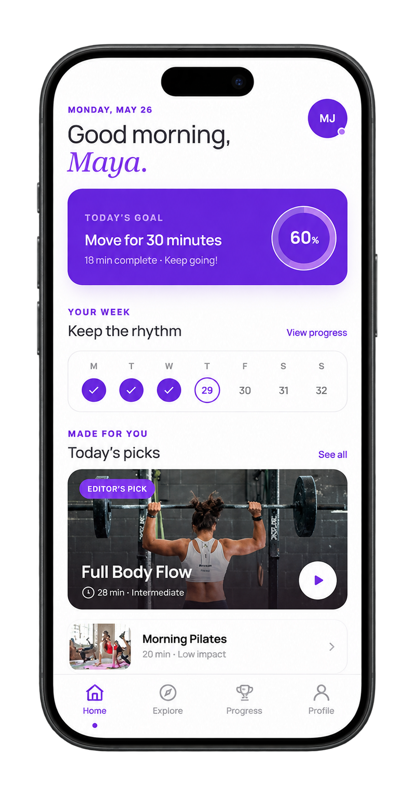
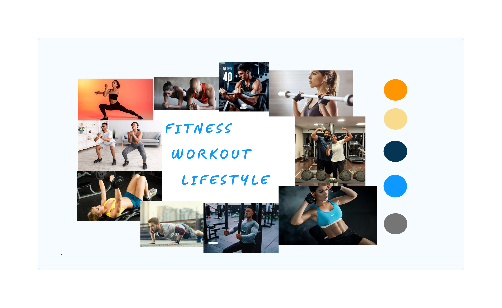
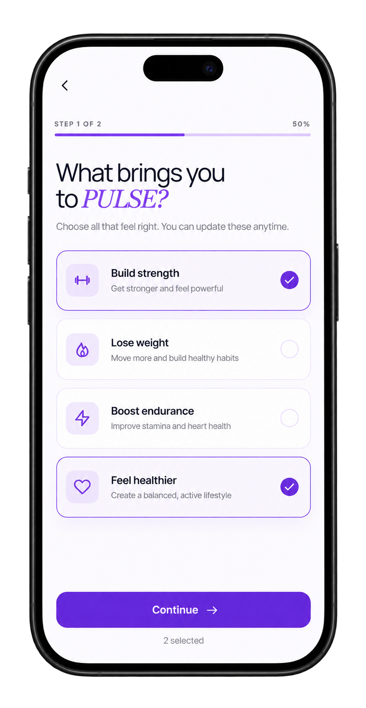
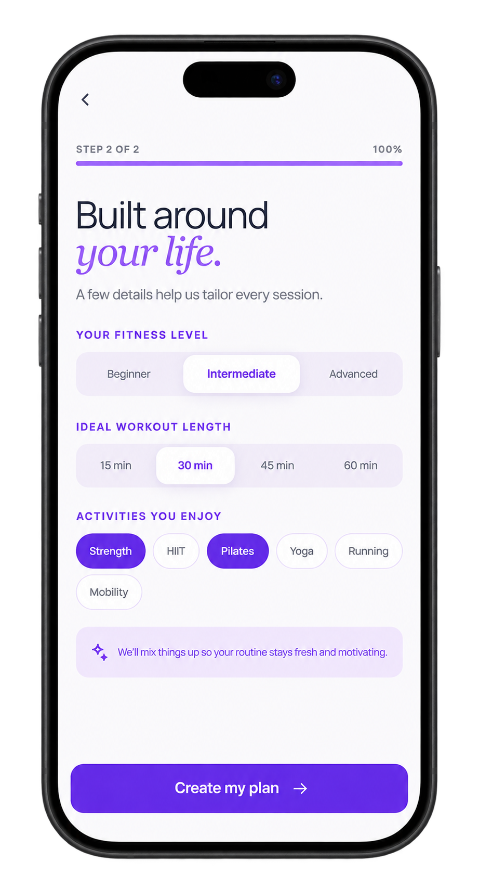
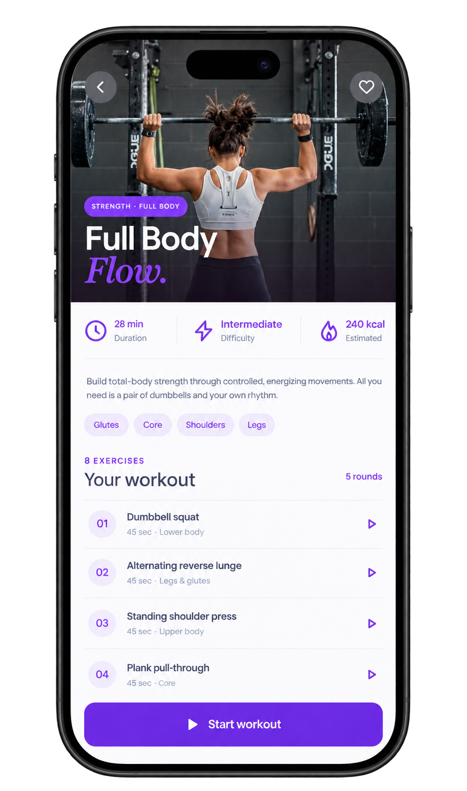
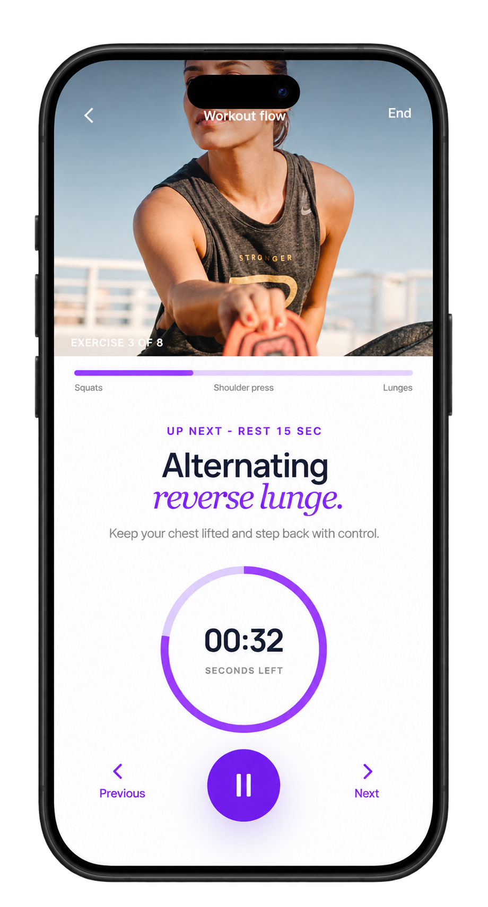
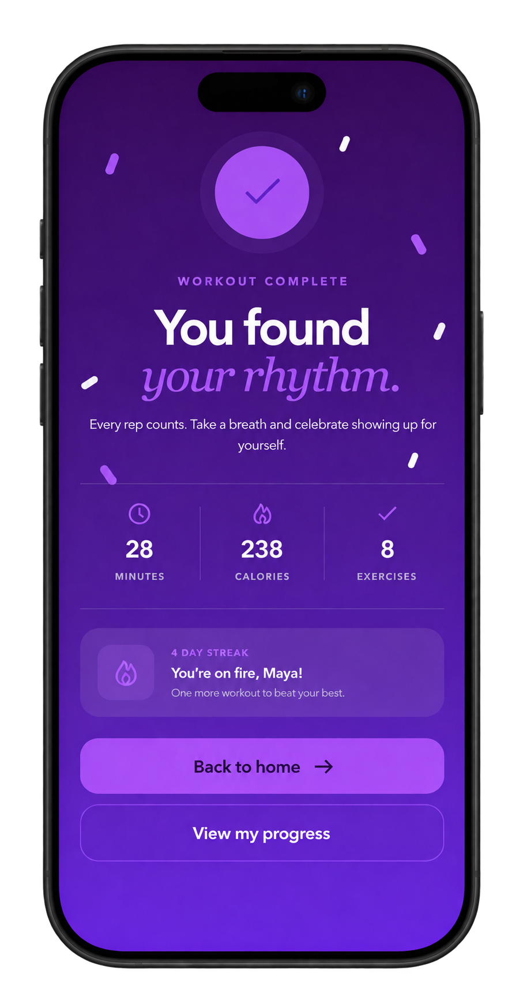
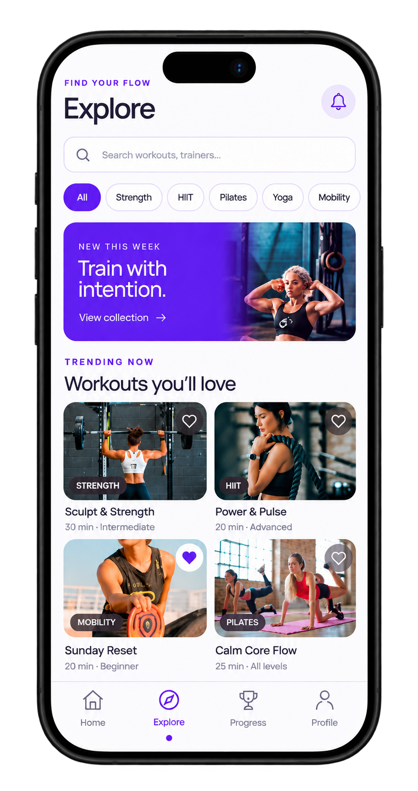
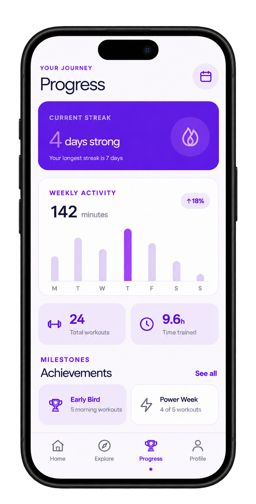
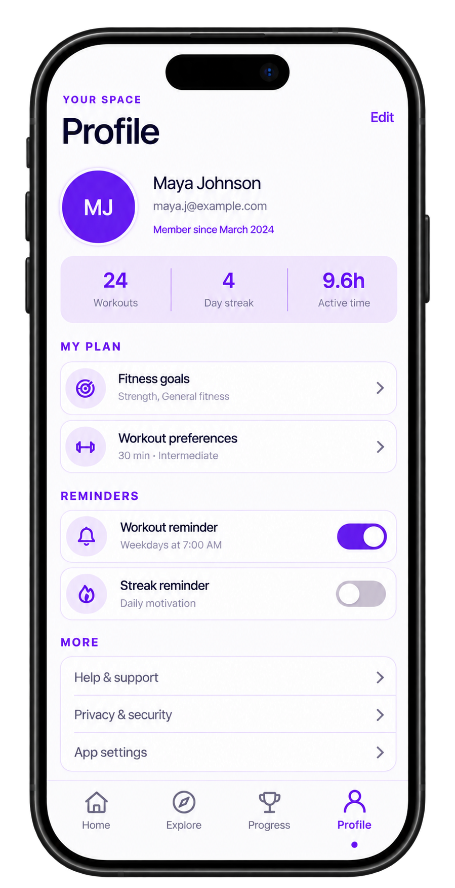

02 Fitness & wellness
PULSE Fitness App.
A mobile fitness companion designed to help users discover workouts, build personalised routines, stay motivated and track their fitness progress through an engaging experience.


01 Overview
About the project.
PULSE is a fitness and wellness mobile app concept that brings workout discovery, personalised fitness routines and progress tracking into one experience. It allows users to explore different activities, choose workouts based on their preferences and monitor their fitness journey.
02 The challenge
Making fitness easier to follow.
Maintaining a consistent fitness routine can be challenging when users struggle to find suitable workouts, organise their activities or track their progress. The design focuses on bringing these experiences together through clear navigation, personalised options and accessible fitness information.
03 User persona
Understanding the intended audience.
I created a fictional user persona to represent a potential PULSE user. It outlines their fitness goals, motivations, preferences and challenges, helping establish a clearer understanding of the audience the app is designed for.

04 Moodboard
Defining the visual direction.
The moodboard brings together fitness imagery, movement and active lifestyles to explore the energy and motivation behind PULSE. It helped shape the initial creative direction and establish the visual inspiration for the app.

03 User onboarding
A more personal fitness experience.
The onboarding process helps users personalise their experience by selecting their fitness goals, preferred activities, workout duration and fitness level.


04 Workout experience
From planning to completing a workout.
The workout experience guides users through the complete activity, from reviewing workout details to following exercises and viewing their completion summary.



05Workout discovery
Explore workouts that match your interests.
The Explore section allows users to discover different workout categories, search for activities and browse recommended fitness sessions based on their interests.

06 Progress & profile
Making progress visible and personal.
Users can monitor their fitness journey through activity summaries, workout statistics, achievements and personal settings. The profile section also provides access to fitness goals, preferences and reminders.


07 Key considerations
Designed around users.
- Personalised fitness goals and workout preferences
- Easy discovery of workout categories and activities
- Clear workout instructions and activity timers
- Accessible progress tracking and achievements
- Consistent navigation across app screens
08 Learnings
What I learned.
Designing PULSE helped me understand how different parts of a fitness application can work together to create a connected user experience. I explored the importance of onboarding, visual hierarchy, consistent components and clear information presentation while designing for different stages of the user's fitness journey.